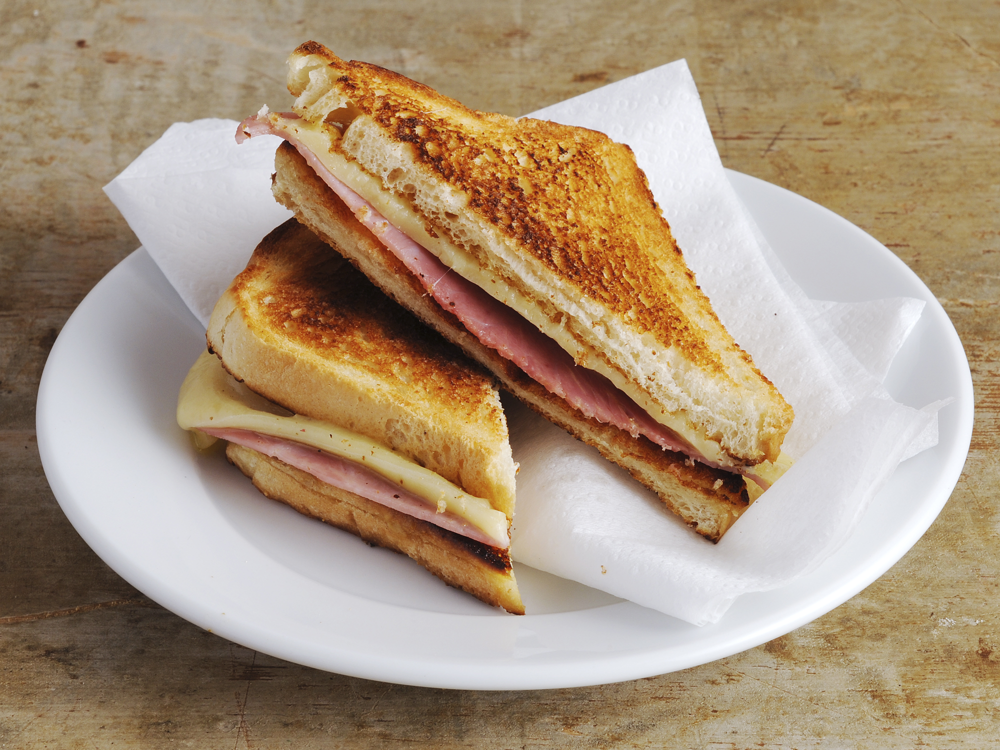

Croque-Monsieur
Ingredients
- Salt
- Pepper
- Ham (4 slice)
- grated Gruyère cheese (100g)
- Milk (100ml)
- Butter (30g)
- Nutmeg
- Bread
- Butter the 8 slices of sandwich bread on one side only. Place 1 slice of cheese on each slice of sandwich bread. Place 1 slice of ham, folded in half, on 4 slices of sandwich bread. Cover with the remaining slices of bread (unbuttered side up).
- In a bowl, mix the grated cheese with the milk, salt, pepper and nutmeg.
- Spread the mixture over the croque-monsieur.
- Place on a baking sheet under the broiler for 10 min.
- Serve!

Back to home page